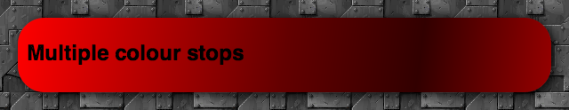
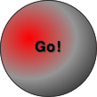
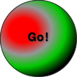
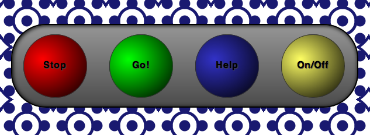
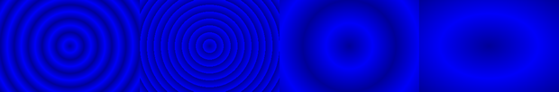

CSS3 radial gradients
Article update: 12th December 2012
The article has been updated to cover the gradient syntax covered in the (at the time of writing) latest Image Values and Replaced Content Module Level 3 specification, dated June 12th 2012.
Introduction
Gradients are much-used on web sites: if you want to liven up pretty much any UI feature (buttons, panels, headers, etc.) you can use a gradient, although you should use them sparingly to avoid the "web site christmas tree effect"™. Traditionally we used CSS background images to add gradients to our UIs, and they worked ok, but they were rather inflexible. You'd have to go to your image editor and make changes to the image file every time you wanted to change the colours, size or direction of the gradient.
The CSS Image Values and Replaced Content Module Level 3 comes to the rescue by allowing us to create gradients on elements programmatically. You can change colours, etc. with a quick chance to the code, and the gradients are so much flexible. For example, you can set colour stops at different percentages across the element you are applying it to, so in fluid layouts the gradient will adjust to fit as the element changes in size.
There are two types of gradients defined in the spec, linear gradients and radial gradients. We covered the former in a previous article — CSS3 linear gradients. This article on the other hand focuses on radial gradients. We'll go through all the basic syntax, and also look at repeating radial gradients near the end of the article.
Linear gradient syntax recap
As a recap, the syntax of linear gradients is fairly simple:
background-image: linear-gradient(to bottom right,rgb(255,0,0),rgb(100,0,0) 50%,rgb(50,0,0) 75%,rgb(150,0,0));Inside the brackets you first include a setting for the gradient to go in (to bottom right means "start at the top left of the element, and travel diagonally towards the bottom right"), then you include a series of colour stops for the gradient to flow smoothly in between (you can specify these in percentages or fixed measurement units). The above line creates a gradient that looks like the following image:

Figure 1: A simple linear gradient example.
Note that the newest versions of Opera, Firefox and IE all support the current syntax of linear gradients, without prefixes, while WebKit-based browsers still require the old syntax. For compatibility with older browser versions and -Webkit- versions, you should consider including vendor prefixes versions of the property, all including the older syntax. This is basically the same, except:
- The direction keywords are the opposite way round and don't include the word
to. Sotop leftis equivalent toto bottom right,bottomis equivalent toto top, and so on. - When signifying angles for directions, you need to do some recalculation, as
0degused to mean horizontal towards the right (equivalent toleft), and now it means vertical and upwards (equivalent toto top).
A full code example would be:
background-image: -webkit-linear-gradient(top left,rgb(255,0,0),rgb(100,0,0) 50%,rgb(50,0,0) 75%,rgb(150,0,0));
background-image: -moz-linear-gradient(top left,rgb(255,0,0),rgb(100,0,0) 50%,rgb(50,0,0) 75%,rgb(150,0,0));
background-image: -ms-linear-gradient(top left,rgb(255,0,0),rgb(100,0,0) 50%,rgb(50,0,0) 75%,rgb(150,0,0));
background-image: -o-linear-gradient(top left,rgb(255,0,0),rgb(100,0,0) 50%,rgb(50,0,0) 75%,rgb(150,0,0));
background-image: linear-gradient(to bottom right,rgb(255,0,0),rgb(100,0,0) 50%,rgb(50,0,0) 75%,rgb(150,0,0));Radial gradient syntax
Radial gradients are a little bit more complicated, but still don't take much time to get used to. The syntax takes the following form:
radial-gradient(size shape at position,colour stops);As with linear gradients, Opera, Firefox and IE all support the newest syntax of radial gradients without prefixes. WebKit- based browsers still use the old syntax and require a prefix. The old syntax of radial gradients uses the same values, but in a different structure:
radial-gradient(position,size and shape,colour stops);So for example the full cross browser syntax would look like this:
-webkit-radial-gradient(50% 50%, circle, rgb(75, 75, 200), rgb(0, 0, 75));
-moz-radial-gradient(50% 50%, circle, rgb(75, 75, 200), rgb(0, 0, 75));
-ms-radial-gradient(50% 50%, circle, rgb(75, 75, 200), rgb(0, 0, 75));
-o-radial-gradient(50% 50%, circle, rgb(75, 75, 200), rgb(0, 0, 75));
radial-gradient(circle at 50% 50%, rgb(75, 75, 200), rgb(0, 0, 75));Will create a gentle blue gradient radiating from the center of the element it is applied to, kind of like this:
Figure 2: A simple radial gradient example.
Now let's explore the three syntax areas — size and shape, position, and colour stops.
position
The position the gradient radiates from is determined by specifying the position of its centre. This takes the form of at, followed by keyword or unit values, specified in basically the same way as CSS background-position. So for example (the button in the example is 107 pixels wide):
-
circle at left topmeans "place the gradient centre in the top left corner". -
circle at 20% 70%means "place the gradient centre 20% across the element and 70% of the way down". -
circle at 70px 80pxmeans "place the gradient centre 70 pixels across the element and 80 pixels down". -
circle at 0%means "place the gradient centre on the left hand edge of the element, centred vertically". If you only specify a single value, that value is taken as the horizontal value, and the vertical value is set to50%(orcenter). -
If you set no value at all for the gradient position, it is assumed to be in the center of the element, ie
center centeror50% 50%.
size and shape
the gradient size and shape is set using a combination of explicit sizes or implicit sizes, and shape keywords.
Explicit sizes
When using explicit sizes, the two values you set are the horizontal and vertical radii of the shape. If you include the circle keyword, and a single value, you will get a circle. If you include the ellipse keyword and two values, or just two values (ellipse being the default), you will get an ellipse. You can use any CSS units that would make sense in the situation, except that bizarrely you can't use percentages. So for example:
-
40px circlemeans "make the gradient circular, and give it a radius of 40px". -
2em 4em ellipsemeans "make the gradient an ellipse, and give it a minor radius of 2em, and a major radius of 4em".
Note that if you don't set a value at all, the setting defaults to ellipse cover (see next section).
Implicit sizes
When using implicit sizes, you use a number of different keywords that specify whether you want the circle or ellipse to be touching the closet or farthest away corner or side of the container from the point it's center is positioned at (for this example we've made the button square, and set the position of the gradient centre to 35% across and 25% down the square):
-
closest-side circle at 35% 25%positions the gradient so that its edge just touches the side of the element nearest to its centre. In the case of an ellipse, it would position it so that its edge just touches the horizontal and vertical sides of the element nearest to its center. You can use the keywordcontainin place ofclosest-side. -
closest-corner circle at 35% 25%positions the gradient so that its edge just touches the corner of the element nearest to its centre. In the case of an ellipse, the effect is pretty much the same. -
farthest-side circle at 35% 25%positions the gradient so that its edge just touches the side of the element farthest away from its centre. In the case of an ellipse, its edge just touches the horizontal and vertical sides of the element farthest way from its center. The following arecircle farthest-sideandellipse farthest-side: -
farthest-corner circle at 35% 25%positions the gradient so that its edge just touches the corner of the element farthest from its centre, in the case of a circle and ellipse. You can use the keywordcoverin place offarthest-corner.
Colour stops
In the last section of the radial gradient syntax, you specify at least two colour stops — these specify what colour is found in different positions along the gradient, and the browser fills in the in-between stages. You can specify the position along the gradient (starting at the centre of the gradient and going outwards) in any unit that it makes sense to (although you'll probably use percentages, pixels or ems). You can specify the colours themselves in any colour units that the browsers support (including alpha channel colours). Each colour stop is separated off using commas.
-
#ff0000, #000000: The simplest setting for colour stops is to just use two colours. When no position unit is specified, the browser assumes that the first colour is at 0% (right in the center), and the second one is at 100% (right on the edge) -
rgb(255,0,0), rgb(150,150,150) 50%, rgb(0,0,0): Here we have three colour stops, with the colours set using RGB. The first colour is again at 0%, and the last one is at 100%, but we've also got a different color stop at 50%.
-
rgb(255,0,0) 20px, rgb(150,150,150) 40px, rgb(0,200,0) 60px, rgb(0,0,0) 80px: Four colour stops, this time positioned along the gradient using pixel values. You'll notice that if you don't position the first and last colour stops at the start and end of the gradient, the space before the first one will adopt its colour, and the space after the last one will adopt the same colour as it too.
And so on and so on. You can have as many colour stops as you like.
Looking at a real example
To show some real usage of radial gradients, let's have a look at a little button panel I whipped up: view the live example.

Figure 3: A panel of buttons — no images in sight.
Each button is a link, with block display, width and height set, border-radius set to make it round, and a simple linear gradient used to give it depth. Since Opera, Firefox and IE all support the newest radial gradient syntax without prefixes in their newest version, I only really need to include a prefixed property for WebKit-based browsers, but I've included the whole lot, for extra backwards compatibility:
background-image: -webkit-radial-gradient(30% 40%, rgb(255,0,0), rgb(0,0,0));
background-image: -moz-radial-gradient(30% 40%, rgb(255,0,0), rgb(0,0,0));
background-image: -ms-radial-gradient(30% 40%, rgb(255,0,0), rgb(0,0,0));
background-image: -o-radial-gradient(30% 40%, rgb(255,0,0), rgb(0,0,0));
background-image: radial-gradient(circle at 30% 40%, rgb(255,0,0), rgb(0,0,0));The page background was written by Divya Manian, and is composed entirely of background-image gradients — see Marrakesh for an explanation of the pattern, and see Lea Verou's excellent CSS3 patterns gallery for more inspiration.
When the buttons are focused on, they are depressed slightly. When they are clicked, they press fully in. I have achieved this by use of varying inset box shadows on hover, focus and active states.
Repeating radial gradients
In the same manner as linear gradients, you can create repeating radial gradients by using the relevant repeat property, in this case repeating-radial-gradient. This simply takes the pattern you have set for your radial gradient, and just repeats it as far as the element it is applied to extends. This cross-browser example comes from my live repeating radial gradients demo:
#repeat1 {
background: -webkit-repeating-radial-gradient(center, 30px 30px, #000099, #0000FA 50%, #000099);
background: -moz-repeating-radial-gradient(center, 30px 30px, #000099, #0000FA 50%, #000099);
background: -ms-repeating-radial-gradient(center, 30px 30px, #000099, #0000FA 50%, #000099);
background: -o-repeating-radial-gradient(center, 30px 30px, #000099, #0000FA 50%, #000099);
background: repeating-radial-gradient(30px circle, #000099, #0000FA 50%, #000099);
}
Figure 4: Repeating radial gradient examples.
Summary
I hope this article has given you all you need to know to start using radial gradients on your designs! Please let us know what you think of Opera's implementation — feedback is always helpful, good or bad. You might also want to check out Gradient, a really nice little app for Mac OS X that generates cross-browser gradient code.
What you've seen here isn't the limit of uses for radial gradients. According to the spec, you can use them anywhere where you can use images, so you should experiment with using them with border-image, list-style-image, etc.
Chris Mills

Chris Mills is a web technologist, open standards evangelist and education agitator, currently working at Opera Software in the developer relations team. He spends most of his time writing articles about web standards for dev.opera.com and other publications (such as .net mag and A List Apart), giving talks at universities and industry conferences, and lobbying universities to improve their web education courses. He believes that education is the answer to everything, but in particular he is passionate about using education to improve the overall content quality, accessibility, usability and future-viability of the Web.
He is the creator of the Opera Web standards curriculum, contributor to the WaSP InterACT project, and coauthor of InterACT with web standards: A Holistic Approach to Web Design. In August 2011, he also accepted the position of co-chair of the newly-formed Web Education Community Group.
Outside work he is a heavy metal drummer, proud father of three and lover of good beer.
This article is licensed under a Creative Commons Attribution 3.0 Unported license.
Comments
The forum archive of this article is still available on My Opera.
-

As a very general note, (Dec 2012):
-

@Richard Sexton
-

Looks like linear-gradient works now, as does -o and -webkit. For radial no prefix works.
-

Might want to make a local copy of:
No new comments accepted.Richard Sexton
Tuesday, December 11, 2012
linear-gradient doesn't work
-o-linear-gradient works
-webkit-linear-gradient works
in Opera (latest)
whereas:
radial-gradient works, but
-o-radial-gradient does not work (nor do webkit/moz or any other).
Odd stuff, but no show stoppers;the confusion over syntax made for some unpleasant moments, but I'm very happy to see gradients finally work; we had those in Postscript in the 80s...
Chris Mills
Wednesday, December 12, 2012
I'm sorry for all the confusion here - the syntax of linear and radial gradients has been updated since these articles were written, and browsers have started to embrace the new syntax. WebKit is the only rending engine that hasn't dropped the prefixes and supported the new syntax, according to my testing.
I have updated the code examples and article text, for both articles. Please let me know if that works for you.
thanks!
Richard Sexton
Friday, February 8, 2013
http://rs79.vrx.net/works/kwikref/programming/css/guide/three/one-a.html
Thanks for fixing the examples!
Richard Sexton
Wednesday, February 20, 2013
NOTICE: This domain name expired on 02/10/2013 and is pending renewal or deletion.
Welcome to: leaverou.me
This Web page is parked for FREE, courtesy of GoDaddy.com.
(for the patterns demo)
Also... webkit (a brilliant move imo) time to update this again ? :-)